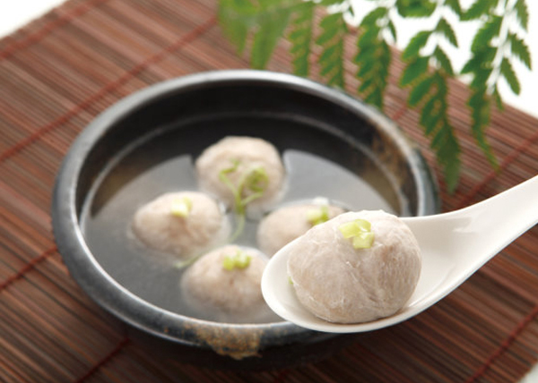
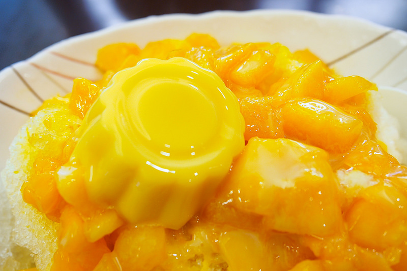

| 基隆 | 新竹 | 台北 |
新竹：
新竹是個客家人居多的城市，因為新竹當地有一種很特別的風─九降風〈居民對於東北季風所造成之強烈陣風的稱呼〉，
因為九降風這樣的特殊氣候,所以造成冬季的東北季風吹襲時風力會更為強烈，所以很適合把食物已風乾的方式製成
，所以當地的小吃有新埔柿餅、北埔擂茶、米粉、粄條等之類已風曬為主,所製成的美食。另外還有貢丸、茶葉也別具特色。

(圖片來源：https://goo.gl/R4JggJ , https://goo.gl/psdpdr)
首先! 第一家：芒果遇到冰
竹東鎮上的新竹在地人無人不知無人不曉的超人氣美食店。
每逢夏天﹐不管內用或外帶幾乎都要等上10~15分鐘，可見其魅力。
店內提供了多種冰品可供選擇﹐除了水果冰、傳統冰、雪花冰、果醬冰外﹐甚至連冰淇淋都有；
其中大家必點的芒果冰﹐是以白色雪花冰上鋪上大量新鮮芒果切塊﹐整份送上來幾乎快看不到下方的雪花冰﹐
淋上甜美煉乳與口感Q彈的芒果布丁﹐炎熱夏天來上一碗芒果冰真是甜蜜蜜又透心涼啊！

(圖片來源：https://goo.gl/qQf6V8)
第二家：鴨肉許 二姊
走進由許二姊所開的鴨肉許，便能看到琳瑯滿目的鴨肉品項﹐當店的鴨肉採煙燻方式料理﹐
因此店內隨時充滿令人垂涎欲滴的鴨肉香味，是與新竹市內其他鴨肉許最不同的地方。其招牌美食為「鴨肉飯」，
在白飯上淋上滷肉汁配上煙燻鴨肉片﹐油油亮亮的飯飄著撲鼻鴨肉香﹐引人食指大動；
其他推薦的美食還有以韭菜、蒜頭搭上滑嫩的鴨血的炒鴨血，帶著微微辣椒香﹐也是可以立刻配上一大碗飯的必點品項。
(圖片來源：https://goo.gl/PNDwM5)